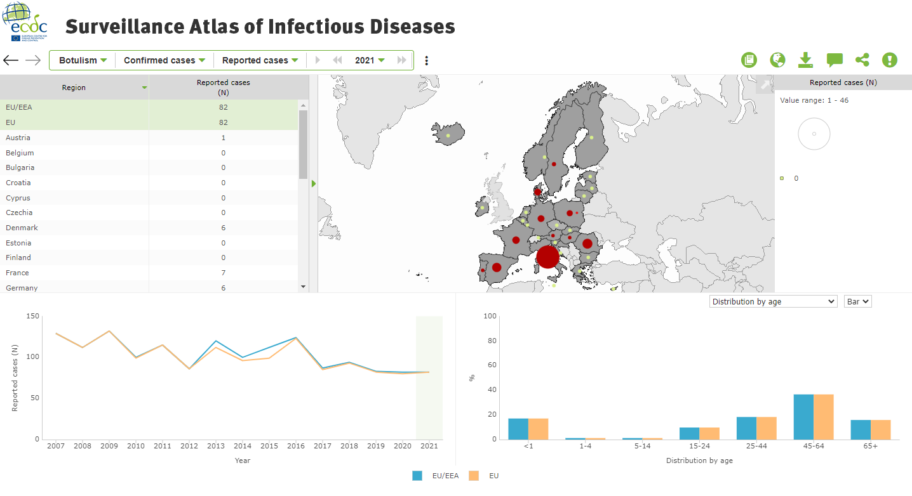

5 Public health data
5.1 The European Surveillance System (TESSy)
5.1.1 Scope
The European Surveillance System (TESSy) is provided by ECDC in order to collect, analyse and distribute surveillance data on infectious diseases in Europe. The EU member States provide data according to the founding regulation of the ECDC (Regulation (EC) 851/2004). Surveillance data collected are mainly case-based and include demographic, clinical, epidemiological and laboratory information. They are reported annually or more regularly as needed for specific objectives, outcomes and resulting public health actions.
5.1.2 Accessibility
TESSy is not publicly available. In order to consult it, it is necessary to send a specific request indicating the required metadata and assuring that the data will be destroyed after its use. The metadata dictionary is available in excel format https://www.ecdc.europa.eu/sites/default/files/documents/MetaDataSet_50%20%282022-09-30%29.xlsx.
Since June 2021, The EpiPulse portal integrates TESSy with the five Epidemic Intelligence Information System (EPIS) platforms and the Threat Tracking Tool (TTT). The portal facilitates collection, analysis and dissemination of indicator- and event-based surveillance data on infectious diseases and associated health issues, including global epidemic intelligence, whole-genome sequencing, and health determinants.
5.2 Surveillance Atlas of Infectious Diseases
5.2.1 Scope
The Surveillance Atlas of Infectious is an interactive tool that allow users to manipulate aggregate EU surveillance data from The European Surveillance System (TESSy) to produce a variety of tables and maps.
5.2.2 Accessibility
The Surveillance Atlas of Infectious is accessible through the main page Surveillance Atlas of Infectious Diseases (europa.eu).
Several infectious diseases are available in the atlas and for each of them, the user can choose the subpopulation, the indicator and the years. The user then has access to tables showing the distribution of the disease according to the chosen indicator by country, year and age and a European map showing the diseases distribution according to the chosen indicator (Figure 5.1).

5.3 The EFSA foodborne outbreak story map
5.3.1 Scope
The EFSA FBO story map provides general information on foodborne outbreaks, their causative agents and implicated food vehicles. This tool is more dedicated to provide information than to share data. Yet, the tool can provide maps presenting the geographical distribution of the number of outbreaks across reporting EU countries. The users can generate also maps showing different outputs: human cases, hospitalisations and deaths.
5.3.2 Accessibility
5.4 The EFSA dashboard on foodborne outbreaks
5.4.1 Scope
The EFSA dashboard on foodborne outbreaks allows for searching data on foodborne outbreaks collected by EFSA from the EU Member States (and several other reporting countries). This reporting is carried out in the context of the Zoonoses Directive 2003/99/EC. The dashboard can display the FBO data interactively though graphs and maps. The main statistics can also be downloaded in the .csv format. A user guide describes the content and functionalities of the dashboard and provides step-by-step information to make full use of the tool.
5.4.2 Accessibility
5.5 Ressources available in Member states
The information collected at European level is also reported by the EU Member States. Information available at national level can provide complementary information to that used at transnational level. The Table below lists the references to the data collected on the identified foodborne outbreaks (please do not hesitate to contact the authors of this report to provide missing or corrected information).
| Country | Access | Data |
|---|---|---|
| France | https://www.santepubliquefrance.fr/ | Pdf report |
| Belgique | https://www.favv-afsca.be/ | Html report |